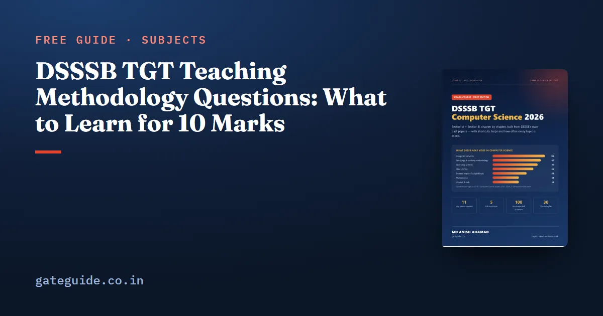

DSSSB TGT Teaching Methodology Questions: What to Learn for 10 Marks

DSSSB TGT teaching methodology questions are ten marks hidden inside Section B — and for most Computer Science graduates, the easiest ten to gain quickly. This guide shows what the block asked from 2021 to 2024 and the facts that answer most of it.
In this guide
- Key takeaways
- The words you will meet
- Child development and learning theories
- Teaching approaches and methods
- Assessment
- Schemes, law and inclusion
- How to learn this block in three days
- A sample question in DSSSB style
- Why this block matters more than it looks
- Common mistakes
- A last-day checklist
- Quick revision
Key takeaways
- Section B ends with 10 teaching-methodology questions in every paper since 2023 (about 10 in 2021 too).
- They count in Section B, so they help you cross the qualifying line.
- Child development is the largest theme: Piaget alone gave several questions.
- Assessment, teaching methods, schemes and school-community topics make up most of the rest.
- None of the questions was about teaching computer science as a subject; all were general B.Ed./CTET style.
The words you will meet
- Formative assessment — assessment for learning, during teaching, with feedback.
- Summative assessment — assessment of learning, at the end, for grading.
- ZPD — Vygotsky's zone of proximal development: what a learner can do with help.
- Inclusive education — children with special needs learning in regular classrooms.
Child development and learning theories
| Fact | Answer |
|---|---|
| Piaget's stages | sensorimotor 0–2, pre-operational 2–7, concrete operational 7–11, formal operational 11+ |
| Uneven conservation within a stage | horizontal décalage |
| Vygotsky | ZPD, scaffolding, social constructivism |
| Bruner | discovery learning, spiral curriculum |
| Kolb | experiential learning |
| Bandura | observational learning (Bobo doll) |
| Gardner | multiple intelligences |
| Marcia: exploring, not yet committed | identity moratorium |
Remember: Piaget's ages are 0-2-7-11. Pretend play and egocentrism mean pre-operational; abstract, hypothetical thinking means formal operational.
Teaching approaches and methods
| Clue in the question | Answer |
|---|---|
| learning by doing; students as meaning makers | student-centred (constructivist) |
| strictly the prescribed textbook | subject-centred |
| heuristic method | H. E. Armstrong |
| project method | W. H. Kilpatrick |
| Dalton plan | Helen Parkhurst |
| kindergarten | Froebel |
| partial 3-D scale model of a scene | diorama |
Assessment
- Closed-ended item: one fixed answer (MCQ, true/false, matching). Open-ended: many possible answers.
- Peer assessment: classmates assess a learner. Self-assessment: assessment as learning.
- ICT-based assessment: online quizzes, e-portfolios; a reflection journal on paper is not ICT-based.
- Good feedback is specific, timely and about the task.
Trap: DSSSB loves statement pairs: "I. … II. … Which is correct? (a) Only I (b) Only II (c) Both (d) Neither". Judge each statement alone before you look at the options.
Schemes, law and inclusion
| Item | Year / fact |
|---|---|
| ICDS | 1975; children 0–6 and mothers |
| DPEP inclusive component | 1997 |
| Sarva Shiksha Abhiyan | 2001 |
| KGBV | 2004; residential schools for girls of disadvantaged groups |
| RTE Act | 2009, in force 1 April 2010; ages 6–14; Article 21A |
| Juvenile Justice Act 1986 | juvenile boy below 16, girl below 18 |
| NEP 2020 | 5+3+3+4; foundational stage 3–8 |
How to learn this block in three days
- Day 1: child development and learning theories — the tables above plus a few practice questions.
- Day 2: methods, approaches and assessment.
- Day 3: schemes, law, NEP 2020, school and community; then 30 mixed practice questions.
Our important topics guide shows how this block compares with the Computer Science topics, and the previous year papers analysis has the year-wise count. The syllabus guide explains where the block sits in Section B.
A sample question in DSSSB style
A teacher sticks strictly to the prescribed textbook and finishes the syllabus whatever the class needs. This approach is — (a) learner-centred (b) subject-centred (c) activity-centred (d) constructivist.
The answer is (b) subject-centred. The clue words are "strictly the prescribed textbook" and "finishes the syllabus". DSSSB writes most pedagogy questions this way: a short description, and four labels to match it to. If you know the label for each description in the tables above, the question takes ten seconds.
Why this block matters more than it looks
For a General candidate, the qualifying line in Section B is 40 marks. Ten of the hundred Section B questions are teaching methodology, so this block alone can supply a quarter of the qualifying marks. Computer Science graduates often skip it because it feels unrelated to their degree, and that is exactly why it is valuable: many competitors leave these marks behind, while a few days of study can secure seven or eight of the ten.
The questions are also predictable in style. Most describe a classroom situation or a theory in one or two lines and ask for its name, its author or its stage. A smaller number give two statements and ask which is correct. Neither style needs deep theory; both need clean recall of a limited list of facts.
Common mistakes
The first mistake is confusing similar theorists. Piaget built cognitive stages; Vygotsky stressed social interaction and the zone of proximal development; Bruner gave discovery learning and the spiral curriculum; Kohlberg wrote about moral development; Erikson about psychosocial stages. Make a five-line table and revise it until each name brings its idea instantly.
The second mistake is mixing up assessment terms. Formative is for learning and happens during teaching; summative is of learning and happens at the end; diagnostic finds a specific difficulty before remedial teaching. Questions often describe the purpose rather than naming the type, so learn the purpose of each.
The third mistake is ignoring dates. SSA, RTE, KGBV, ICDS and NEP each have a year that DSSSB has asked. Learn the five years together as a short timeline — 1975, 2001, 2004, 2009, 2020 — and these questions become ten-second answers.
A last-day checklist
On the day before the exam, read three things only: Piaget's four stages with ages, the five scheme years (1975, 2001, 2004, 2009, 2020), and the assessment terms with their purposes. That short list answers a surprising share of the ten pedagogy questions, and it takes less than fifteen minutes. The rest of the block you will recognise from your earlier study when you see the options.
If you are unsure where to begin, start with the topic that gave the most questions in the past papers and work downwards. Write short notes as you go, revise them every few days, and test yourself with timed questions rather than only reading. Steady daily work over the remaining weeks is far more effective than long sessions in the final days, and it leaves you calm enough on the exam day to read every question carefully.
Quick revision
- 10 pedagogy questions at the end of Section B, every paper.
- Piaget 0-2-7-11; Vygotsky ZPD; Kolb experiential; Bandura observational.
- Learning by doing = student-centred; textbook-bound = subject-centred.
- Formative = for learning; summative = of learning; peer = by classmates.
- ICDS 1975, SSA 2001, KGBV 2004, RTE 2009, NEP 2020 (5+3+3+4).
Frequently asked questions
How many teaching methodology questions come in DSSSB TGT?
Every TGT Computer Science paper since 2023 has ended Section B with a block of 10 teaching-methodology questions, and the 2021 papers carried about the same. They count towards Section B, so they also count towards the qualifying marks. Ten marks is roughly a quarter of the 40 marks a General candidate needs in Section B.
Do I need B.Ed. to answer DSSSB teaching methodology questions?
No. B.Ed. is not required for the TGT Computer Science post, and the questions are factual - child development stages, assessment types, teaching methods and education schemes. A non-B.Ed. candidate can learn the repeated facts in two or three days of focused study.
Which pedagogy topics are asked most in DSSSB?
Child development and learning theories come first - Piaget's stages appeared in several papers - followed by teaching methods and approaches, assessment (formative, peer, closed-ended items), inclusive education and schemes such as SSA and ICDS, and school-community topics such as parental involvement.
Are NEP 2020 questions asked in DSSSB TGT?
In the papers analysed up to 2024, NEP 2020 itself was not asked directly, but it is part of the official pedagogy scope and is the most likely new area. Learn its 5+3+3+4 structure, the stages' age ranges, mother-tongue instruction, coding from Grade 6 and the PARAKH assessment centre.
Sources
Dates, vacancies and the syllabus are set by DSSSB and can change. Always confirm at dsssb.delhi.gov.in. GATE Guide is not affiliated with DSSSB.